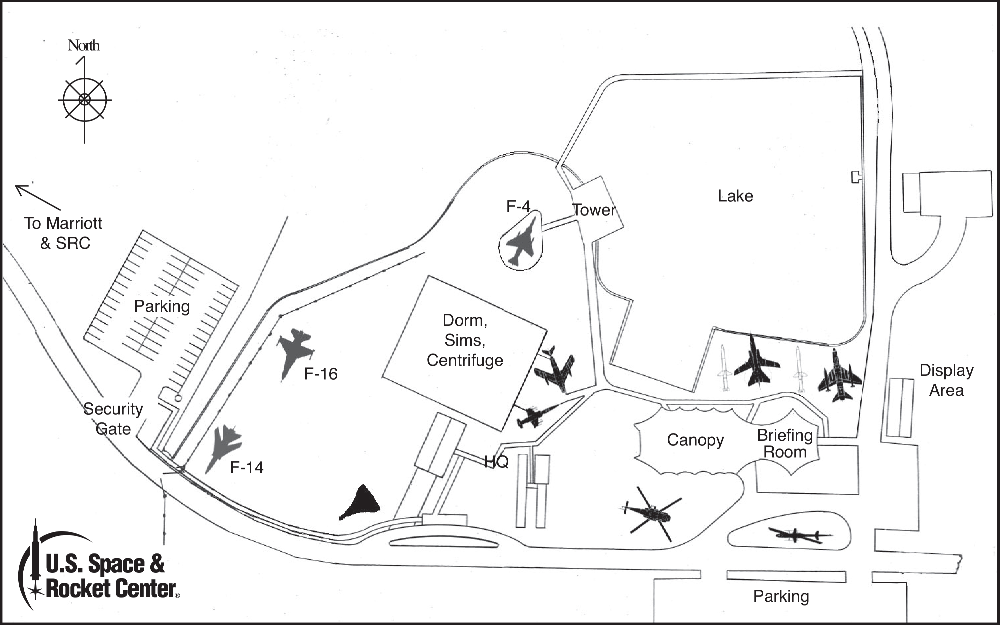

Chaperone and Camper Rules:
The chaperone population at SCIVIS will be quite large. SPACE CAMP will provide all chaperones and room and board and, in return, the U.S. Space and Rocket Center will expect your services as vision professionals. Your expectations are as follows:
- All chaperones are expected to stay on the grounds at the U.S. Space and Rocket Center. Sleeping quarters are crowded with as many as six people per room. Bunks are arranged two down (floor level) and five up (upper bunks). Agility, perseverance and flexibility, both physical and emotional, are qualities needed to survive in the Habitat. Small lockers, sometimes only one, are provided for stowing your gear. All children and adults should bring a lock to store your valuables. Shower shoes and bathrobes have proven to be essential items. Your presence with your team may be required both day and night. Please do not come expecting to take a week off, believe me, this is not the case.
- The primary reason for your participation at the Space and Rocket Center is first, to chaperone your team, and second, to act as an advisor to the staff at SPACE CAMP. Your expertise is needed in situations that deal directly with safety issues and adapting the environment for our students. When not directly needed by the staff the chaperone will fade into the background and be available, as needed. The staff at SPACE CAMP is directly responsible for the children. You are there as a technical advisor and to deal with situations regarding their disability and unusual behaviors. You are responsible for your students the entire time at Space Camp. You may be asked to help chaperone other children during the week.
- SPACE CAMP also offers the opportunity to mingle with other vision professionals and exchange ideas. About 70 vision professionals are expected this year.
- As you know, medications are a major issue for our students. Our philosophy will be somewhat different than the normal procedure at SPACE CAMP. It will be the responsibility of each group chaperone to provide the guide duties to and from SICKBAY. If an individual chaperone is responsible for specialized medication, i.e. injections, then that chaperone must report to SICKBAY also. All medications MUST be stored at SICKBAY.
- Please remember that during your stay at SPACE CAMP you are considered to be on duty 24 hours a day. Students and chaperones have had to make trips to the hospital at all hours. Please make sure someone from your state is available at all times.
- Different states and countries will be teaming up with each other to make teams. Those chaperones will be needed, mostly during mission practices and the actual mission, but also during other student activities. While duties to your individual state team will take priority, we still will need your expertise as a vision educator to aid in technical assistance. Some sample teams may be:
- Braille interpretation and labeling for missions, graduation certificates, etc.
- Pool and lake duty for all programs and students (bring your bathing suits)
- Sighted guide for medications, etc.
- Low vision assessment and equipment setup
- The worst time for accidents to occur is during periods of inactivity. These are few and far between, usually occurring during early arrival and late departure, but when they occur please keep your students under direct supervision.
- If you are an early arrival please use the time to orient your students to the Habitat facility. Restrooms and showers are located on each floor of the Habitat. The grounds at the U.S. Space and Rocket Center do not lend themselves to quick orientation. Students should never be allowed to roam about unsupervised. The rule of thumb for students is: If you are alone, you are in the wrong place.
- All chaperones should bring a work kit of scissors, slate & stylus, and a Braille cheat sheet (if needed).
- Chaperones please inform your students that smoking and public displays of affection (PDAs) are not tolerated at Space Camp. Students are there to learn about math and science and couple interaction will not be tolerated.
- With the exception of specially designed chaperone programs, all activities scheduled are for the students. We realize that Space Camp can be an exciting time for chaperones too, but please do not make a pest of yourself. Ask the team leader and, if time allows, they will consider your request. Remember your main role is to fade into the background and appear when needed as a technical advisor.
- Space Camp (grades 4-6) and Advanced Academy (Grades 10-12) are the programs that can be mainstreamed with sighted children from all over the United States. For the most part, Academy and Aviation Challenge are not mainstreamed. Sighted children who are friends, siblings, or other family members can also attend at the same cost and take advantage of the group rate. All registration will be handled through Dan Oates.

SCIVIS Info:
190 Armstrong St.
Romney, WV 26757
Leave A Message When Calling
+1 (304) 851 5680
scivis.oates@gmail.com
USSRC Info:
One Tranquility Base
Huntsville, AL 35805
+1 (256) 837 3400
+1 (800) 637 7223
camp@spacecamp.com
Habitat 1 Map:

*This map only includes the first floor, but the layout is extremely simple and posted on doors.
Aviation Challenge Map:

Hints:
- The living quarters are small, so the less stuff the better.
- Make sure that name identification tags are on the luggage ahead of time. It will save time when checking in at the airport.
- Adults will also need identification to verify their name on their ticket.
- Airports are busy, so with larger groups wearing bright matching shirts is helpful.
- All students have to know what their luggage looks like so unquie features like bright colors or ribbons tied around luggage can help.
- Carrying a backpack that is easily identifiable with identifiaction and things to do on the plane can be great for younger campers.
- Carrying things like medications and money in labeled zip lock bags for each students can help to stay organized.
- Make sure students have their parents memoirzed to make calling home easier (if they don't have their own phones).
- Chaperones from the same program (Space Programs or Aviation Programs) can share suitcases to save space.
- Broken in comfortable shoes that are ventilated are vital for all of the walking.
- Bathrooms are like college dorms so robes, water shoes, and shower caddies are necessary.
- Take labeled small garbage bags or something to keep students' dirty laundry in for organization.
- Take a padlock to keep valuables in the small provided lockers.
- Take a flashlight to guide students after lights out.
- Take comfortable clothing that is distinct and labeled and have students do the same for organization.
- Know that people always forget something so someone goes to Walmart every day to get things (can't buy medications).
- Enjoy the camp experience. :D
Contacts:
If you have specific health issues or dietary concerns you should email those directly to the nurses at Space Camp and they will take care of those. Copy me if you wish and I will follow up when I arrive in Huntsville. Nurses: nurses@spacecamp.com
If we can be of any service to your SPACE CAMP team prior to your arrival, please let me know. Dan Oates can be reached by e-mail: scivis.oates@gmail.com) or cell 304-851-5680.